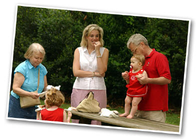

Georgia Rural Health 
- Office of Rural Health Services
- Georgia Department of Community Health
- Georgia's Rural Health Information Clearinghouse (RHIC)
- Jiann-Ping Hsu College Of Public Health
- Center for Rural Health and Research at Georgia Southern University
- Georgia Statewide Area Health Education Centers (AHEC) Program
- Georgia Hospital Association
- Georgia Health Policy Center
National Rural Health
- National Rural Health Association
- Federal Office of Rural Health Policy
- Rural Policy Research Institute (RUPRI)
- HRSA's Rural Assistance Center
- 3 R Net: Rural Recruitment and Retention Network
- Migrant Clinicians Network
- National Health Service Corps
- Health Administration Degrees
- Drug Watch
Other State Rural Health Organizations
Member links
- Albany Primary Health Care
Appling HealthCare System
Aetna Medicaid
Archbold Memorial Hospital
Blue Ridge AHEC
Community Health Care Systems
Clinch Memorial Hospital
Chatuge Regional Hospital and Nursing Home
Coffee Regional Medical Center
Colquitt Regional Medical Center
Community Health Works
East Georgia Health Cooperative, Inc
Emanuel Medical Center
Evans Memorial Hospital
Georgia Association of Physician Assistants
Georgia Board for Physicians Workforce
Georgia College & State University
Georiga Health Policy
Georgia's Health Sciences University
Georgia Hospital Association
Grady General Hospital
Georgians for a Healthy Future
Georgia Statewide AHEC Network/GA Health Sciences University
Healthcare Georgia Foundation
Healthy Mothers, Healthy Babies of Georgia
Jiann-Ping Hsu College of Public Health
Liberty Regional
Magnolia Coastlands AHEC
Mitchell County Hospital
Morgan Memorial Hospital
Mercer Medical Library
Morehouse School of Medicine
Mercer University School of Medicine
Norris Consulting Group
Nurse Family Partnership
Philadelphia College of Osteopathic Medicine
Phoebe Sumter Medical Center
Southeast Health Unit
Sowega AHEC
State Office of Rural Health
Primary Care of Southwest Georgia
The Wynn Group
Three Rivers AHEC
University of Georgia College of Public Health
Upson Regional Medical Center
Washington Co. Regional Medical Center
Platinum Corporate Sponsors


Gold Corporate Sponsors

Silver Corporate Sponsors

Bronze Corporate Sponsors